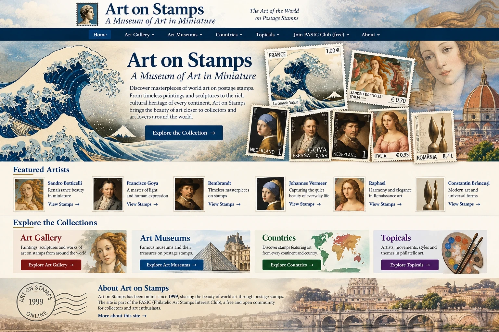

Skip to content

Search (disabled in test)
English
Français
Deutsch
Español
Italiano
Português
Română
Русский
中文
Explore the Collections:
Art Gallery
Art Museums
Countries
Topicals
Art on Stamps
A Museum of Art in Miniature
Explore the Collection
Featured Artists
Sandro Botticelli
Francisco Goya
Rembrandt
Johannes Vermeer
Raphael
Constantin Brancusi
Explore the Collections
Art Gallery
Art Museums
Countries
Topicals
Art on Stamps · Online since 1999 ·
Join PASIC Club (free)